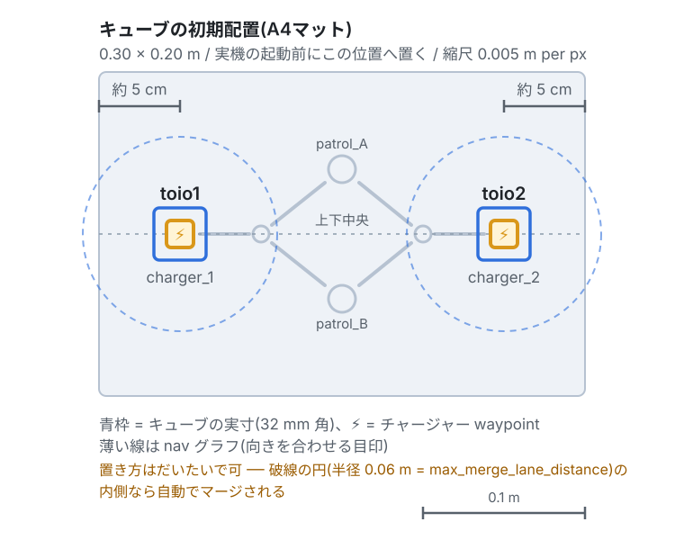

章11: 実機へ(sim→real の考え方と準備)
← 前章: 可視化とダッシュボード | 目次 | 次章: 実機で1台を動かす →
ここから第2部 実機編。シミュレーションで学んだフリート処理を、実機のtoioキューブでもう一度なぞる。この章はその導入で、simとrealで何が変わり、何が変わらないかを押さえ、実機を起動できる状態まで持っていく。
狙い
- simとrealの差分を1枚の表で押さえる
- 実機の準備(Bluetooth・toio.py・A4マット・初期配置)を済ませる
- 実機特有の落とし穴(起動順序と最初のタスク)を知ったうえで起動する
- 以降の章で毎回使うA4の頂点の読み替えを手元に置く
第1部で学んだタスク操作(章3〜9)は、--use_sim_time の有無以外そのまま実機で通る ── それを章12以降で1つずつ確かめる。
変わらないこと / 変わること
章2の三層モデルを思い出す。差し替わるのは一番下のロボット層(③)だけ。RMFコア(①)とフリートアダプタ(②)、つまり入札・交通調停・充電・タスクの仕組みはまったく同じ。
| シミュレーション(第1部) | 実機(第2部) | |
|---|---|---|
| RMFコア・入札・交通調停・充電 | ← 同一 → | ← 同一 → |
| 起動の合図 | run_sim:=true use_sim_time:=true |
既定のまま(run_sim:=false / use_sim_time:=false) |
| 端末構成 | 端末A(全部)+ 端末B(タスク投入) | 端末1(実機ブリッジ)+ 端末2(RMF+Nav2)+ 端末3(タスク投入) |
| マット | A3(6頂点・双方向) | A4(4頂点・一方通行ループ) |
| ロボットを動かす実体 | toio_gazebo | toio_ros2のBLEブリッジ + 実キューブ |
| 位置報告 | TF(map→ベースフレーム)にフォールバック |
/toioN/toio/pose を購読 |
| バッテリ | 100%固定(publish_battery で疑似放電) |
/toioN/toio/battery_state(実測・10%刻み) |
| チャージャー到着 | Nav2の結果だけで完了 | Dockイベントでキューブ内蔵走行が精密停止 |
| 効果音 | ログに出るだけ | 実際に鳴る |
タスクCLIの --use_sim_time |
付ける | 付けない |
「位置とバッテリは③→②へ別経路で上がる」という章2の話が、ここで効く。実機ではTFではなくtoio_ros2の専用トピック由来になる ── アダプタから上のRMFにとっては、どちらから来ても同じ「ロボットの位置」。
Note
実機編の各章に載せている画像・動画は、当面は第1部と同じシミュレーションのものを使い回している。画面の見え方(RVizの緑の帯、マゼンタの実位置)は実機でも同じなので目安にはなるが、右側のGazebo画面は実機には無い。実機撮影のものに差し替える予定。
実機の準備
環境構築で実機用の追加(--with-toio-py など)が要る。手順はdocs/SETUP.mdの「実機検証の手順」に詳しい。ここでは要点だけ。
- Bluetoothアダプタが必要
- toio.pyをvenv(
~/toio_venv)へ導入済みであること - A4マットを使う(実機検証はA4前提で整備されている。第2部は全章A4)
- キューブ2台を充電済みにしておく(章14で残量を減らす実験をするが、それ以外の章は残量が十分ある状態で進める)

toio1はcharger_1(左端から約5cm・上下中央)、toio2は charger_2(右端から約5cm・上下中央)へ。破線の円は自動マージ範囲(半径0.06m)で、この内側ならだいたいの位置でよい。
起動順序 ── 実機で最初に踏む落とし穴
シミュレーションは1コマンドだったが、実機は2端末で、順序が決まっている。
Warning
実機ブリッジを先に起動すること。 逆順にするとnav2が恒久的に起動失敗する。
理由: Nav2のcostmapは活性化時に map → toioN/base_link のTFを待つ。これを供給するのは実機ブリッジ側。待ち時間が initial_transform_timeout を超えると活性化がエラーになり、lifecycle managerがbringup全体を中止する。自動リトライは無いので、あとからブリッジを起動しても復旧しない。全体を落として起動し直すしかない(復旧手順は章16)。
# 端末1: 実機ブリッジ(venv内。キューブの電源を入れてから)
source ~/toio_venv/bin/activate
ros2 launch toio_ros2 toio_multi_bringup.launch.py cube_ids:=<ID1>,<ID2>
# 端末2: RMFコア + アダプタ + Nav2(ブリッジが位置を出し始めてから)
source /opt/ros/jazzy/setup.bash
source ~/dev_ws/install/setup.bash
ros2 launch toio_rmf_bringup toio_rmf.launch.py mat:=a4
# 端末3: タスク投入(第1部の端末Bに相当)
source /opt/ros/jazzy/setup.bash
source ~/dev_ws/install/setup.bash
- 端末2は
run_sim/use_sim_timeを指定しない(既定が実機運用) - RMF運用時はtoio_ros2ノードに
enable_goal_pose_motion:=falseを設定する(/toioN/goal_poseを無効化。RMFがNav2経由で動かすため) - 「ブリッジが位置を出し始めた」は、端末3で
ros2 topic echo /toio1/toio/pose --onceが返ることで確かめられる
TF待ちのタイムアウトはtoio_navigationの nav2_params.yaml で300秒に設定済み(Nav2既定の60秒ではBLE接続に足りなかった)。背景はdocs/SETUP.mdに詳しい。
最初のタスクは「25秒待って・ログで確かめて」投げる
Warning
Managed nodes are active が出てから最初のタスクを投げるまで、約25秒待つ。 活性化直後に投げた最初のCLI要求は消えることがある(toio_rmf_bringup#55)。投げたら、フリートアダプタのログに Direct request … queued(指名時)かディスパッチャの Add Task(入札時)が出たことを確認する。出ていなければもう一度投げる。simでは起きにくいが、実機では毎回意識するとよい。
第2部の各章は、この「待って・確かめる」を済ませた状態から始める。
A4の頂点の読み替え(第2部で毎回使う)
第1部のコマンド例はA3(6頂点)前提。A4は頂点が4つだけなので、次の表で読み替える。各章のコマンドはすでに読み替え済みで載せるが、第1部の確認課題を実機でやり直すときはこの表を見る。
| A3(第1部・6頂点) | A4(第2部・4頂点) |
|---|---|
charger_1 / charger_2 |
charger_1 / charger_2(そのまま) |
patrol_A / patrol_B |
patrol_A / patrol_B(そのまま) |
patrol_D |
patrol_B に読み替え |
patrol_C |
A4には無い(patrol_A などで代替) |

approach_1 → patrol_A → approach_2 → patrol_B → approach_1 の一方通行ループ。チャージャーはループ上でなく支線の先にある。形の意味は章6の実験3と、章13で改めて扱う。
実機編の進め方
第1部と同じ「狙い / 動かす / 観察する / 理解する / 確認課題」の型で進むが、書くのはsimとの差分だけ。コマンドの意味や概念は第1部の章へリンクするので、忘れていたらそちらへ戻る。
| # | 章 | 対応する第1部 | 実機で新しく見えるもの |
|---|---|---|---|
| 12 | 実機で1台を動かす | 章3・4 | 位置報告の出どころ、一方通行ループの周回 |
| 13 | 実機で入札と交通調停 | 章5・6 | レーン数で決まる入札、mutexによる直列化 |
| 14 | 実機でバッテリと自動充電 | 章7 | 実測残量でChargeBatteryが発火、Dock精密停止 |
| 15 | 実機で搬送・アクション・可視化 | 章8・9・10 | 効果音が鳴る、実機のダッシュボード |
| 16 | 実機特有のトラブルと復帰 | ── | BLE切断、マット境界、逆順起動からの復旧 |
| 17 | 卒業課題とまとめ | ── | 実機検証チェックリスト |
まず章12で、simで最初にやった「1台を1回動かす」を実機で繰り返す。
← 前章: 可視化とダッシュボード | 目次 | 次章: 実機で1台を動かす →